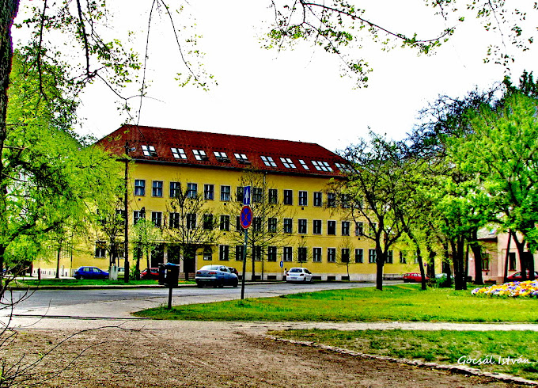

Bemutatkozás
Szeretettel köszöntöm a Bajai SZC Türr István Technikum megújult honlapján.
A Bajai Szakképzési Centrum Türr István Technikum jogelődjét a Bajai Felsőkereskedelmi Iskolát közel 100 éve, 1923-ban alapították, azzal a céllal, hogy a város és a térség fejlődő gazdasága számára szakembereket képezzenek. Az intézmény küldetése azóta sem változott, iskolánk ma is fontos szerepet tölt be a környék társadalmi, gazdasági életében.
A technikum képzési kínálata ma 4 ágazatra terjed ki: gazdálkodás és menedzsment, informatika és távközlés, közlekedés és szállítmányozás, illetve oktatás ágazatra. Mind a négy terület rendkívül gyorsan változó, innovatív szakmákat foglal magába. Így iskolánkban egyszerre élnek mély gyökerekkel rendelkező tradíciók, identitást meghatározó hagyományok és korszerű technikai eszközök, módszerek, eljárások. Az előbbieket megőrizve az utóbbiakat felhasználva igyekszünk gyorsanan és eredményesen alkalmazkodni napjaink új kihívásaihoz.
Tanulói létszámunk megközelíti a 700 főt, melyből több mint 600 fő nappali munkarendben, közel 100 fő esti munkarendben tanul intézményünkben. Nagyon örülünk, hogy iskolánk az utóbbi években egyre népszerűbb a pályaválasztók körében, és egyre többen szeretnének türrösök lenni. A siker azonban felelősséggel is jár. A Bajai Szakképzési Centrum támogatásával folyamatosan azon dolgozunk, hogy méltó feltételeket tudjunk biztosítani az oktatáshoz, mind az infrastruktúra, mind pedig a személyi feltételek tekintetében. Intézményünk 24 osztályteremmel és 14 számítógép-teremmel, korszerű eszközparkkal, esztétikus környezetben várja a tanulni vágyókat. Az oktatói testületet 47 főállású, 5 részmunkaidős és 11 óraadó tanár alkotja. Oktatóink elhivatott, együttműködő, és az innovációra nyitott, magasan képzett szakemberek, rendszeres résztvevői szakmai és módszertani továbbképzéseknek. A siker azonban felelősséggel is jár.
A Bajai Szakképzési Centrum támogatásával folyamatosan azon dolgozunk, hogy méltó feltételeket tudjunk biztosítani az oktatáshoz, mind az infrastruktúra, mind pedig a személyi feltételek tekintetében. Intézményünk 24 osztályteremmel és 14 számítógép-teremmel, korszerű eszközparkkal, esztétikus környezetben várja a tanulni vágyókat. Az oktatói testületet 47 főállású, 5 részmunkaidős és 11 óraadó tanár alkotja. Oktatóink elhivatott, együttműködő, és az innovációra nyitott, magasan képzett szakemberek, rendszeres résztvevői szakmai és módszertani továbbképzéseknek. A minőségi oktatás mellett azonban fontos feladatnak tartjuk, hogy neveljünk is, és számos közösségépítő, szabadidős foglalkozást is biztosítunk tanulóink számára. A Diákönkormányzatunk változatos rendezvényei mellett a Türrös Diáksportegyesület által szervezett kirándulások színesítik a diákéletet. Türrösnek lenni jó! Jó itt kezdeni a középiskolai tanulmányokat, a szakmai életutat, jó ide tartozni, és jó ide később visszatérni. Nézzék meg kínálatunkat, mit lehet nálunk tanulni, milyen képzéseket kínálunk! Nyerjenek bepillantást, milyenek a türrös mindennapok!